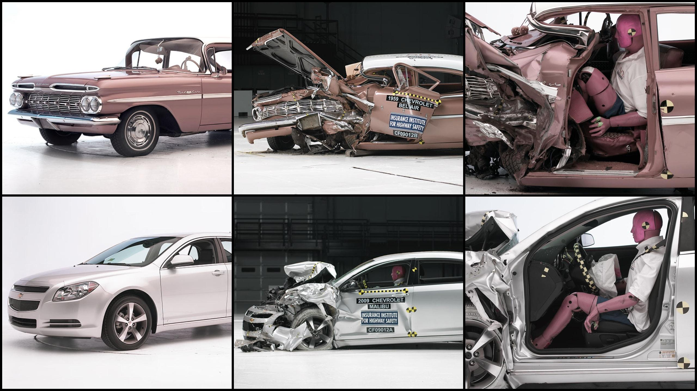

Dynamique et transformation de l’énergie mécanique
Section 4.2 · Chapitre 4La loi de l’inertie
Un autobus freine soudainement : pourquoi notre corps semble-t-il vouloir continuer vers l'avant? Il ne s'agit pas d'une nouvelle force qui nous propulse. Il s'agit de l'inertie, et la différence change la façon dont nous comprenons les mouvements.
Un autobus freine soudainement : pourquoi notre corps semble-t-il vouloir continuer vers l'avant? Il ne s'agit pas d'une nouvelle force qui nous propulse. Il s'agit de l'inertie, et la différence change la façon dont nous comprenons les mouvements.
La grande idée
Un objet peut se déplacer à vitesse constante sans qu’une force vers l'avant soit nécessaire. Ce sont les forces de résistance qui, dans la vie courante, masquent souvent cette propriété.
Nous allons avancer de la situation concrète vers les symboles, puis revenir au phénomène pour vérifier que le résultat a un sens. En physique, les nombres ne remplacent jamais le raisonnement : ils le rendent vérifiable.
Avant de calculer
Ce que tu vas apprendre à observer
Nommer les grandeurs
Avant de choisir une équation, nous identifierons les objets, les interactions et les quantités connues avec leurs unités.
Construire un modèle
Un diagramme n’est pas une décoration. Il montre ce que nous retenons de la situation et ce que nous décidons de négliger.
Calculer avec méthode
On choisit les axes, on isole la grandeur recherchée, on remplace les données et on conserve les unités.
Interpréter et vérifier
Un résultat peut être correct arithmétiquement et impossible physiquement. Nous allons comparer les unités, les signes et les ordres de grandeur.
Fait saillant
L'une des raisons pour lesquelles les voitures modernes sont conçues pour se déformer lors d'une collision est liée au principe d'inertie et à la réduction des forces exercées sur les occupants.
En effet, à l'époque où les carrosseries étaient beaucoup plus rigides, les voitures pouvaient subir relativement peu de dommages lors d'un accident. Cependant, cette rigidité entraînait souvent une décélération beaucoup plus brutale, augmentant ainsi les forces exercées sur les passagers.
Selon le principe d'inertie, lorsqu'une voiture s'arrête brusquement, le corps d'un passager tend à poursuivre son mouvement à la même vitesse et dans la même direction qu'avant l'impact. C'est pourquoi les ceintures de sécurité et les coussins gonflables sont si importants !
Mais pourquoi laisser la voiture se déformer ? Lors d'une collision, les zones de déformation programmée absorbent une partie de l'énergie cinétique en se déformant, ce qui augmente la durée de la collision. Ainsi, la décélération moyenne de l'habitacle est réduite, ce qui contribue à diminuer les forces exercées sur les occupants.
Autrement dit, il vaut mieux que la carrosserie se déforme plutôt que notre corps !
Ouch!

Les zones de déformation programmée permettent
de réduire les forces subies par les occupants.
L’histoire des idées
D’où vient cette façon de comprendre la nature?
Comment en est-on arrivé à ces lois? Newton ne travaillait pas dans le vide : les expériences de Galilée, les descriptions des orbites par Kepler et le débat sur les forces lui ont fourni des points de départ. À partir de 1684, ses échanges avec Edmond Halley ont contribué à transformer des réflexions en une démonstration étendue, publiée dans les Principia en 1687. Une théorie scientifique gagne sa force lorsqu’elle relie plusieurs observations et produit des prédictions vérifiables.
L'idée ancienne voulait qu'un objet ait besoin d'être continuellement poussé pour poursuivre son mouvement. Elle semble raisonnable : dans la rue, une bicyclette laissée à elle-même finit par ralentir. Mais que se passe-t-il si l'on réduit les forces qui résistent au mouvement?
Galilée a fait rouler des billes sur des plans inclinés afin de ralentir le phénomène et de le mesurer. Ses observations sur l'accélération et sur la persistance du mouvement ont fourni une partie du chemin vers l'inertie. Attention à une nuance historique : ses formulations ne sont pas identiques en tout point à la loi rectiligne moderne; Newton et d'autres auteurs, dont Descartes, ont clarifié cette idée.
Newton a formulé la loi d'inertie dans un ensemble cohérent de lois du mouvement. La première loi indique ce que nous attendons lorsque la force extérieure résultante est nulle. Les frottements de notre quotidien masquent souvent ce comportement, mais ne l'invalident pas.
Le point à retenir : Si la résultante des forces est nulle, l'objet conserve son vecteur vitesse : au repos ou en mouvement rectiligne uniforme.
Ce qui nous intéresse n’est pas de mémoriser un nom ou une date. Essayons de comprendre comment une question devient une relation physique et ce que cette relation permet de prévoir.
Une expérience de pensée à réaliser
Fais glisser un objet sur deux surfaces différentes, sans le lâcher près d'un bord. Compare les distances parcourues. Quel effet la résistance de la surface a-t-elle sur l'arrêt? En pensée, diminue cette résistance jusqu'à une valeur négligeable.
Le récit historique s’appuie sur des recherches en histoire des sciences; les exemples numériques et les démarches sont des adaptations pédagogiques originales.
Apprendre en comprenant
Les notions essentielles
1. Ce que dit la première loi
Dans un référentiel inertiel, un corps au repos reste au repos, et un corps en mouvement rectiligne uniforme conserve sa vitesse vectorielle, si la somme des forces extérieures est nulle. Il ne suffit pas que sa vitesse en km/h soit constante : sa direction doit aussi rester constante.
À faire : Vérifier à la fois la valeur et la direction de la vitesse.
2. Pourquoi une voiture finit par s’arrêter
Une voiture qui roule sur route horizontale n'avance pas par inertie contre le frottement indéfiniment. Si le moteur n'entretient pas le mouvement, la résistance de l'air et les forces de roulement produisent une résultante opposée au déplacement, donc une décélération.
\[\sum F_x=-f\quad\Rightarrow\quad a_x=-f/m\]
À faire : Identifier les forces réelles plutôt que d'inventer une force d'inertie dirigée vers l'avant.
3. Masse et inertie
La masse inertielle mesure la résistance d'un objet à une modification de sa vitesse pour une force donnée. Un chariot chargé accélère moins qu'un chariot vide si la même force nette agit sur chacun. Le concept de référentiel devient important quand on décrit un mouvement depuis un véhicule qui accélère.
\[a=F_{\mathrm{net}}/m\]
À faire : Comparer des objets en gardant la même force nette.
Une démarche qui fonctionne
Comment aborder un problème de physique?
Lire la situation et reformuler ce qui arrive à l’objet étudié.
Isoler le système et représenter les forces, les déplacements ou les énergies pertinents.
Identifier les grandeurs connues, l’inconnue, les unités et les hypothèses.
Choisir une relation adaptée, puis l’isoler avant d’y substituer les valeurs.
Vérifier l’unité, le signe, le sens physique et la cohérence du résultat.
Pour aller plus loin
La première loi définit aussi ce qu’est un référentiel inertiel. Un véhicule qui accélère constitue un référentiel non inertiel : il faut alors distinguer forces réelles et descriptions apparentes.
La démarche en action
Trois exemples entièrement résolus
Je te propose de commencer par lire l'énoncé et d'essayer de prévoir la réponse.
Exemple guidé 1
Un palet sur la glace
Un palet de hockey se déplace en ligne droite
sur une surface glacée idéale, parfaitement
horizontale et sans frottement.
Sa vitesse initiale est de
4,0 m/s vers la droite.
Nous observons son mouvement pendant
6,0 secondes.
Question :
Quelle distance le palet parcourt-il
pendant cet intervalle de temps?
Expliquez pourquoi sa vitesse demeure constante.
1. Représentation de la situation
Commençons par représenter le déplacement
du palet sur la glace.
Le palet se déplace en ligne droite.
Sa vitesse reste constante pendant
les 6,0 secondes d'observation.
Pour comprendre pourquoi sa vitesse
demeure constante, analysons maintenant
les forces exercées sur le palet.
Diagramme de corps libre (DCL)
Le poids et la force normale se compensent.
Aucune force horizontale n'agit sur le palet.
Observation :
le palet subit deux forces verticales :
Son poids \(\vec P\), dirigé vers le bas.
La force normale \(\vec N\), exercée
par la glace et dirigée vers le haut.
Puisque le palet ne subit aucune accélération
verticale, ces forces se compensent.
De plus, la surface est parfaitement
sans frottement et aucune autre force
horizontale n'est appliquée.
La résultante horizontale est donc nulle.
2. Identification des données
Les données connues :
Vitesse initiale :
\(v_i=4{,}0\,\mathrm{m/s}\), vers la droite.
Durée du mouvement observé :
\(\Delta t=6{,}0\,\mathrm{s}\).
Force résultante horizontale :
\(F_{\mathrm{rés},x}=0\,\mathrm{N}\).
La trajectoire est rectiligne.
Les inconnues :
Accélération horizontale :
\(a_x=?\)
Vitesse finale :
\(v_f=?\)
Distance parcourue :
\(d=?\)
3. Analyse physique de la situation
Nous choisissons l'axe horizontal \(x\)
comme axe de référence, avec le sens
positif orienté vers la droite.
Puisqu'aucune force horizontale
n'agit sur le palet :
\[
\sum F_x=0
\]
Selon la deuxième loi de Newton :
\[
\sum F_x=ma_x
\]
Nous pouvons donc écrire :
\[
0=ma_x
\]
Puisque la masse du palet est
non nulle :
\[
\boxed{a_x=0\,\mathrm{m/s^2}}
\]
L'accélération horizontale est nulle.
Cela signifie que la vitesse du palet
ne change pas.
C'est une application de la
première loi de Newton,
également appelée
principe d'inertie.
Un objet conserve son état de repos
ou de mouvement rectiligne uniforme
lorsque la force résultante exercée
sur lui est nulle.
4. Choix des formules mathématiques
Nous savons que l'accélération
du palet est nulle.
Pour vérifier sa vitesse finale,
nous utilisons :
\[
\boxed{v_f=v_i+a_x\Delta t}
\]
Pour calculer son déplacement
horizontal dans le cas d'une
vitesse constante, nous utilisons :
\[
\boxed{\Delta x=v_x\Delta t}
\]
Puisque le palet se déplace toujours
en ligne droite vers la droite,
sans changer de sens, la distance
parcourue correspond à la grandeur
de son déplacement :
Représentons le vélo au début du freinage
et lorsqu'il est complètement arrêté.
La vitesse du vélo est orientée vers la droite,
tandis que son accélération est orientée vers
la gauche. Le vélo ralentit jusqu'à l'arrêt.
Schéma non à l'échelle.
Observation :
l'accélération est opposée à la vitesse.
La grandeur de la vitesse diminue donc
progressivement.
2. Identification des données
Les données connues :
Vitesse initiale :
\(v_i=8{,}0\,\mathrm{m/s}\)
Vitesse finale :
\(v_f=0\,\mathrm{m/s}\)
Grandeur de la décélération :
\(2{,}0\,\mathrm{m/s^2}\)
L'accélération est constante.
Le mouvement est rectiligne.
Les inconnues :
Le temps nécessaire pour s'arrêter :
\(\Delta t=?\)
La distance parcourue pendant
le freinage : \(d=?\)
3. Choix du système de référence
Nous choisissons l'axe horizontal \(x\)
comme axe de référence.
Le sens positif correspond au sens
initial du mouvement, vers l'avant.
Vers l'avant (droite) :
signe positif.
Vers l'arrière (gauche) :
signe négatif.
La vitesse initiale est positive :
\[
v_i=+8{,}0\,\mathrm{m/s}
\]
Puisque l'accélération est opposée
au mouvement, elle est négative :
\[
\boxed{a_x=-2{,}0\,\mathrm{m/s^2}}
\]
Attention :
une accélération négative ne signifie
pas automatiquement qu'un objet ralentit.
Dans cet exemple, le vélo ralentit parce
que l'accélération et la vitesse sont
de signes opposés.
4. Choix des formules mathématiques
Nous étudions un mouvement rectiligne
à accélération constante.
Pour calculer le temps de freinage,
nous utilisons :
\[
\boxed{v_f=v_i+a_x\Delta t}
\]
Pour calculer la distance parcourue,
nous pouvons utiliser l'équation
du déplacement :
Nous obtenons le même résultat
avec les deux méthodes :
\[
\boxed{d=16\,\mathrm{m}}
\]
6. Réponse finale
Le cycliste met
4,0 secondes
pour s'arrêter complètement.
\[
\boxed{\Delta t=4{,}0\,\mathrm{s}}
\]
Pendant ce freinage, il parcourt
une distance de
16 mètres.
\[
\boxed{d=16\,\mathrm{m}}
\]
Conclusion :
Avec une vitesse initiale de
8,0 m/s et une décélération constante
de 2,0 m/s², le cycliste s'arrête
après 4,0 s, en parcourant 16 m.
7. Interprétation physique
Lorsque le cycliste actionne ses freins,
ceux-ci exercent un couple qui s'oppose
à la rotation des roues.
Le contact entre les pneus et la route
permet alors l'apparition d'une force
horizontale de freinage, orientée
à l'opposé du mouvement.
Selon la deuxième loi de Newton :
\[
\sum \vec F=m\vec a
\]
La force résultante horizontale est
orientée vers l'arrière, ce qui produit
une accélération opposée à la vitesse
initiale du vélo.
La vitesse diminue donc progressivement :
Après 0 s : \(v=8{,}0\,\mathrm{m/s}\)
Après 1 s : \(v=6{,}0\,\mathrm{m/s}\)
Après 2 s : \(v=4{,}0\,\mathrm{m/s}\)
Après 3 s : \(v=2{,}0\,\mathrm{m/s}\)
Après 4 s : \(v=0\,\mathrm{m/s}\)
La vitesse diminue de 2,0 m/s
chaque seconde.
Cependant, le vélo continue
de se déplacer vers l'avant
pendant toute la période de freinage.
À retenir :
une accélération orientée à l'opposé
de la vitesse entraîne une diminution
de la grandeur de cette vitesse.
Attention :
la distance de 16 m calculée ici
représente uniquement la
distance de freinage.
Dans une situation réelle, il faut
également considérer la distance
parcourue pendant le temps de réaction
du cycliste, avant même qu'il commence
à freiner.
La distance d'arrêt totale réelle
serait donc généralement supérieure
à la distance de freinage seule.
Exemple guidé 3
Ceinture de sécurité
Un passager est assis dans un autobus qui se déplace
en ligne droite à une vitesse de
12 m/s.
Soudainement, le conducteur actionne les freins.
L'autobus ralentit, mais le corps du passager
tend à conserver sa vitesse initiale.
Heureusement, le passager porte sa ceinture
de sécurité, qui contribue à le ralentir
avec le véhicule.
Questions :
Pourquoi le passager tend-il à poursuivre son
mouvement vers l'avant? Quel est le rôle de
la ceinture de sécurité? Comment les lois de
Newton permettent-elles d'expliquer le phénomène?
Figure — Ceintures de sécurité dans un autobus.
Les ceintures permettent de retenir les passagers
et de contribuer à leur ralentissement
lors d'un freinage.
Photographie :
Fenguang Chisingh 3800 /
Wikimedia Commons
— Domaine public (CC0 1.0).
1. Représentation de la situation
Comparons deux moments : avant le freinage,
puis pendant le freinage de l'autobus.
Schéma simplifié : la vitesse initiale est
orientée vers l'avant, tandis que la composante
horizontale de la force exercée par la ceinture
est orientée vers l'arrière.
Observation :
lorsque l'autobus commence à freiner,
le passager tend à poursuivre son mouvement
vers l'avant.
Il ne s'agit pas d'une force qui pousse
son corps vers l'avant : c'est une
manifestation de son inertie.
2. Identification des données
Les données connues :
Vitesse initiale du passager :
\(v_i=12\,\mathrm{m/s}\), vers l'avant.
Le passager et l'autobus ont initialement
la même vitesse.
L'autobus ralentit lors du freinage.
Le passager porte une ceinture
de sécurité attachée au véhicule.
Les inconnues :
Le sens de l'accélération du passager.
Le sens de la force horizontale
nécessaire pour le ralentir.
La grandeur de cette force,
si suffisamment de données
étaient disponibles.
Données manquantes :
nous ne connaissons pas la masse du
passager, son accélération ni
la durée de son ralentissement.
3. Choix du système de référence
Nous choisissons l'axe horizontal
\(x\), avec le sens positif
orienté vers l'avant de l'autobus.
Vers l'avant : signe positif.
Vers l'arrière : signe négatif.
La vitesse initiale du passager est :
\[
v_i=+12\,\mathrm{m/s}
\]
Pour ralentir sans changer immédiatement
de sens, son accélération doit être
opposée à sa vitesse :
\[
\boxed{a_x<0}
\]
La force résultante horizontale
nécessaire au ralentissement est
donc orientée vers l'arrière.
4. Choix des formules mathématiques
Pour expliquer le mouvement du passager,
nous utilisons d'abord la
première loi de Newton.
Lorsqu'un objet ne subit aucune
force résultante :
\[
\boxed{\sum\vec F=\vec 0}
\]
Son accélération est nulle
et sa vitesse demeure constante.
Pour comprendre comment la ceinture
ralentit le passager, nous utilisons
ensuite la deuxième loi de Newton :
\[
\boxed{\sum\vec F=m\vec a}
\]
Selon l'axe horizontal :
\[
\boxed{\sum F_x=ma_x}
\]
Nous pouvons aussi exprimer
l'accélération moyenne par :
La force résultante est négative,
donc orientée vers l'arrière.
Cependant, puisque la masse du passager
et la durée du freinage sont inconnues,
nous ne pouvons pas calculer sa
grandeur numériquement.
Dans la réalité, la ceinture n'est
pas nécessairement la seule source
de force horizontale : le siège
et d'autres points de contact
peuvent également contribuer
au ralentissement.
6. Réponse finale
Avant le freinage, le passager
se déplace à la même vitesse
que l'autobus :
\[
\boxed{v_i=12\,\mathrm{m/s}}
\]
Lors du freinage, son corps
tend à conserver cette vitesse
en raison de son inertie.
La ceinture de sécurité exerce
une force qui contribue à produire
une accélération opposée
au mouvement.
\[
\boxed{a_x<0}
\]
\[
\boxed{\sum F_x<0}
\]
Conclusion :
la ceinture permet au passager
de ralentir avec l'autobus.
La grandeur de la force ne peut
pas être déterminée avec les
données disponibles.
7. Interprétation physique
L'inertie est la propriété
d'un objet de résister
aux changements de sa vitesse.
Lorsque l'autobus freine,
sa vitesse diminue en raison
des forces de freinage.
Cependant, le corps du passager
ne ralentit pas automatiquement
simplement parce que l'autobus
ralentit.
Une force doit agir sur lui
pour modifier sa vitesse.
La ceinture fournit une partie
importante de cette force.
Elle retient le passager et
l'aide à ralentir avec le véhicule.
À retenir :
la ceinture de sécurité n'annule
pas l'inertie. Elle fournit
une force qui permet de modifier
la vitesse du passager.
Attention :
lorsque le passager semble être
projeté vers l'avant pendant
le freinage, cela ne signifie
pas qu'une nouvelle force
le pousse vers l'avant.
Son corps tend simplement
à poursuivre son mouvement
initial.
Dans un freinage très brusque,
les forces nécessaires pour
ralentir le passager peuvent
devenir importantes.
C'est pourquoi une ceinture
de sécurité correctement portée
est essentielle : elle limite
le déplacement du passager
par rapport à l'habitacle et
contribue à réduire le risque
de blessures.
Expérimenter et argumenter
Le laboratoire interactif
Modifie les paramètres et observe les deux représentations. Une valeur change : quelles autres grandeurs suivent? Est-ce que la relation est linéaire, quadratique ou inverse? Le modèle prend vie sous tes yeux.
Simulation — La loi de l’inertie
Hypothèses du modèle : Mouvement rectiligne avec décélération constante donnée; le déplacement s’arrête lorsque v atteint zéro.
Figure 1 — Modèle physique schématique; les dimensions et les flèches ne sont pas nécessairement à l’échelle.
Figure 2 — Graphique ou tableau de comparaison calculé à partir du modèle.
Petit protocole d’exploration
Commence avec les paramètres affichés à l’ouverture et note le résultat principal.
Ne modifie qu’une seule variable à la fois. Qu’est-ce qui change?
Teste un cas limite, par exemple une force nulle, une pente de 0° ou une vitesse réduite.
Écris une conclusion complète : « Lorsque … augmente, … parce que … » en rappelant une équation du cours.
Tu peux faire une capture de la simulation pour illustrer ta démarche, puis poursuivre avec les exercices WeBWorK de la section 4.2.
Réfléchir au modèle
Le piège à éviter
Attention
L'inertie ne « pousse » pas un objet vers l'avant. Elle décrit sa tendance à conserver son état de mouvement. Le schéma de forces doit montrer les interactions véritables.
Une stratégie simple consiste à écrire, à côté de chaque formule, ce qui doit être vrai pour pouvoir l’utiliser. C’est une excellente habitude, en physique comme en mathématiques.
Une dernière vérification
Mission : l’enquête physique
Cinq défis, cinq décisions. Chaque réponse correcte rapporte 100 XP. Les questions sont conçues pour vérifier les idées plutôt que la vitesse d’exécution. Les erreurs donnent une explication et tu peux réessayer.
Autonomie et consolidation
À toi d’essayer, sans regarder la solution
Voici les trois mises en situation de la leçon sous forme de défis. Essaie de les résoudre sur papier, puis développe les étapes du corrigé uniquement après ton essai. Tu peux changer les nombres pour inventer d'autres versions des mêmes problèmes.
Défi 1 — Patin sur glace · Refaire sans regarder
Un palet avance à 4,0 m/s sur une glace idéale, parfaitement sans frottement, pendant 6,0 s.
Corrigé progressif :
Modèle : résultante horizontale nulle.
La vitesse reste 4,0 m/s pendant l’intervalle.
La distance parcourue est v·t = 4,0 × 6,0.
On obtient 24 m en ligne droite.
Sans frottement, le palet conserve sa vitesse : 24 m en 6 s.
Défi 2 — Freinage d’un vélo · Refaire sans regarder
Un cycliste se déplace à 8,0 m/s et freine avec une décélération constante de 2,0 m/s².
Corrigé progressif :
Choisissons l’avant positif, donc a = −2,0 m/s².
Avec v = v₀ + at, posons v = 0 pour l’arrêt.
0 = 8,0 − 2,0t donc t = 4,0 s.
La distance d’arrêt dans ce modèle est (8,0 + 0)/2 × 4,0 = 16 m.
Temps d’arrêt : 4,0 s; distance : 16 m.
Défi 3 — Ceinture de sécurité · Refaire sans regarder
Un passager se déplace avec l’autobus à 12 m/s lorsqu’il freine.
Corrigé progressif :
Avant le freinage, le passager et l’autobus ont la même vitesse.
Lors du freinage, l’autobus ralentit, mais le corps du passager tend à garder sa vitesse.
La ceinture exerce alors une force vers l’arrière sur le passager.
Cette force change sa vitesse pour qu’il ralentisse avec le véhicule.
La ceinture n’annule pas l’inertie : elle fournit la force nécessaire pour ralentir.
Le lien avec WeBWorK
Le devoir de section 4.2 — La loi de l’inertie peut contenir des variantes numériques de situations comparables. Dans WeBWorK, expose ta démarche sur papier même si la plateforme ne demande qu’une valeur finale.
Les références
Sources et lectures complémentaires
La structure et les titres suivent l’itinéraire ERPI–SOFAD. Les explications, exemples et simulations de cette page sont une adaptation originale rédigée pour des élèves de physique FGA, en s’appuyant sur les principes vérifiés dans les références ci-dessous.
Un exemple issu de University Physics peut être plus avancé que ceux exigés au secondaire 5; nous gardons ici les outils mathématiques utiles à la progression du cours.